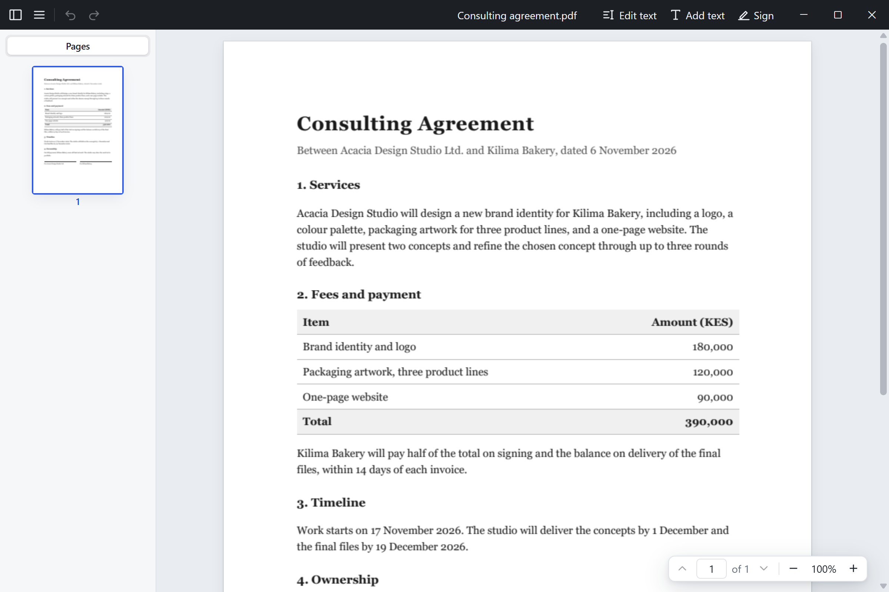

Edit text in place
Click a line and type. The text keeps its font, size, color, and position. Select words to make them bold, italic, underlined, or a new color.
Free and open source PDF editor
Fix a typo in a contract, add a line to a letter, then sign it. Ukurasa changes existing text in its own font, adds text that matches the page, and places your signature.
Windows, macOS, and Linux. No account, no uploads.

Click a line and type. The text keeps its font, size, color, and position. Select words to make them bold, italic, underlined, or a new color.
Click the page and write. New text takes the style of the text around it, and Enter starts a new line.
Draw your signature or type your name, then place it on the page.
Edits are appended to the file when it allows, so the original stays intact underneath. Ukurasa asks first when a change would break an existing signature.
Thumbnails, the document outline, smooth zoom, and quick page jumps. Pages render with PDFium, the engine behind the PDF viewer in Chrome.
Everything runs on your computer. No account, no uploads, and no tracking.
Follow along or suggest a feature on GitHub.
Every release is built from the public source on GitHub.
Windows 10 and 11, 64-bit
Installer (.exe) MSI for all usersmacOS 11 or later
Apple silicon (.dmg) Intel (.dmg)64-bit, Ubuntu 22.04 or later
Ubuntu, Debian (.deb) Fedora (.rpm) AppImageThe installers are not code signed yet, so the first launch needs one extra step.
Windows: SmartScreen shows "Windows protected your PC". Choose More info, then Run anyway.
macOS: if macOS says Ukurasa "is damaged" or "can't be opened", open System Settings > Privacy & Security and choose Open Anyway, or run this once in Terminal:
xattr -dr com.apple.quarantine /Applications/Ukurasa.appUkurasa is built with Rust, Tauri, Svelte, and PDFium, and licensed under MIT or Apache 2.0. Read the code, report a bug, or send a pull request.
View on GitHub